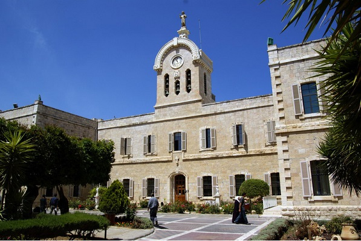
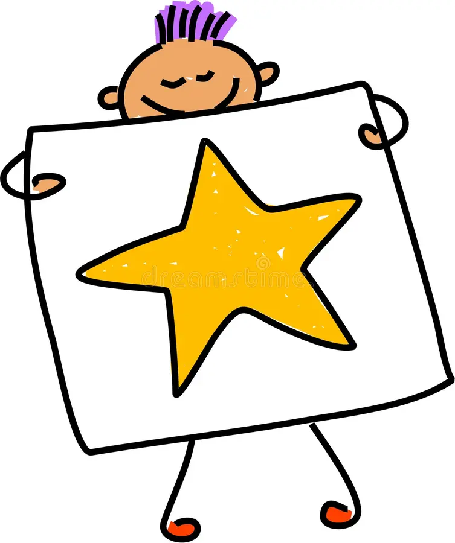
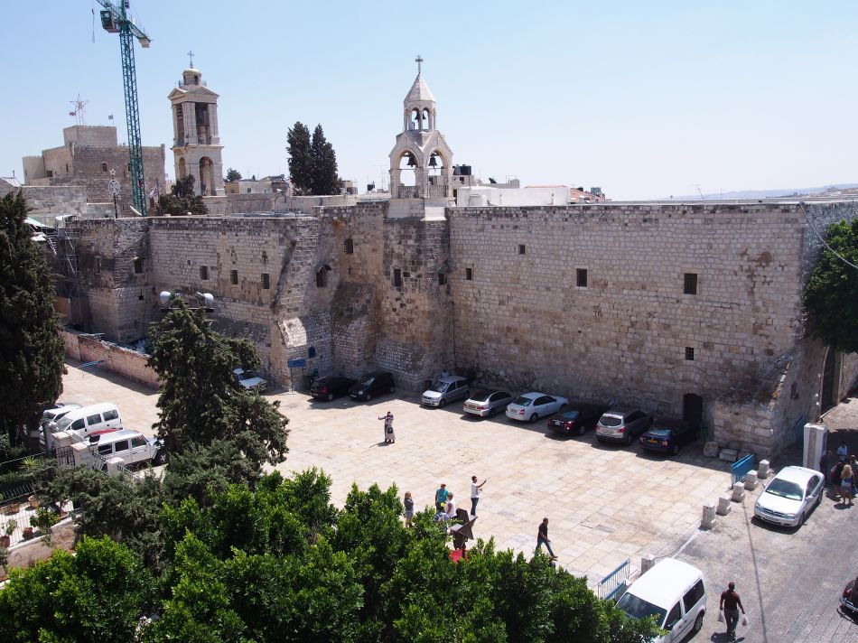

Information about Fatma


University
I studied at Bethlehem University in Palestine
College of Engineering and Information Technology.

Academic Life
- Academic Excellence: Achieving a high GPA.
- Research and Publications: Publishing research papers.
- Leadership Roles: Holding leadership positions in student organizations or clubs on campus.
- Internships : Completing internships .
- Community Involvement: Volunteering or participating in community service projects.
- Projects and Portfolios: Showcasing projects, portfolios, or creative works.
- Professional Development: Attending workshops, seminars, or industry-related events.
Achievment
- Strong programming skills in languages like Java, Python, and C++.
- Extensive experience in developing web applications using technologies such as HTML, CSS, and JavaScript.
- Deep knowledge of designing and implementing databases using SQL and NoSQL databases.
- Exceptional problem-solving skills, requirements analysis, and software design expertise.
- Effective teamwork and communication skills for collaborating within project teams.
- Efficient time management to meet deadlines and successfully achieve goals.
- Passion for staying updated with the latest technological advancements and applying them in projects.

Favorite
I have several hobbies, such as baking desserts like cookies and cold treats. I also enjoy playing electronic games like GTA 2. Additionally, I have a passion for exploring the inner of devices and performing maintenance on them."
city
I live in Bethlehem on School Street.

Sports
I have several favorite sports:
- I enjoy playing football.
- Volleyball and handball are also sports I like.
- Badminton is another sport I have an interest in.
- I actively engage in running and walking.
- I have a fondness for hiking in natural trails, such as Makhrour paths.
RoleModel
My role model is the Prophet Muhammad (peace be upon him), and after him, Muhammad Al-Daif.
WebDiary
To view the results of previous lab tests.